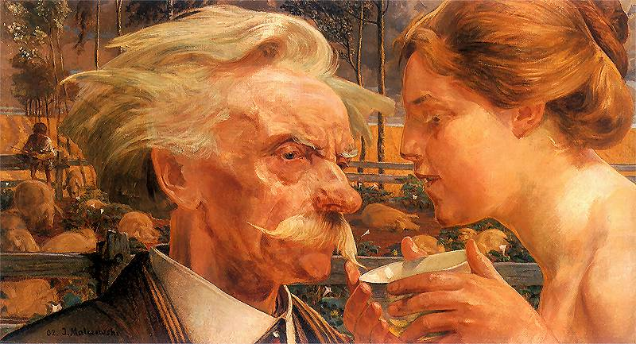

Bogata twórczość malarska Jacka Malczewskiego obejmowała ponad cztery dekady, od lat 70 XIX wieku aż do połowy lat 20 XX wieku. Kolekcja poniżej zawiera tylko wybrane obrazy z dużo większego katalogu dzieł, głównie bardziej dojrzałe dzieła malarza z lat 1897-1916. Dużo szerszą kolekcję obrazów można znaleźć m.in. na stronach Pinakoteki oraz Wikimedia Commons.
